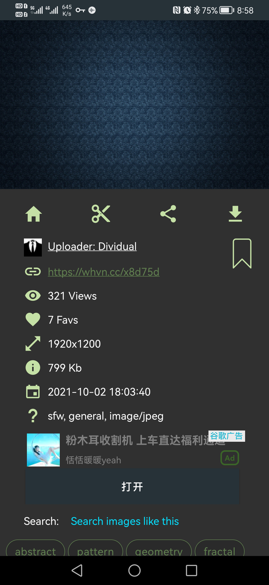
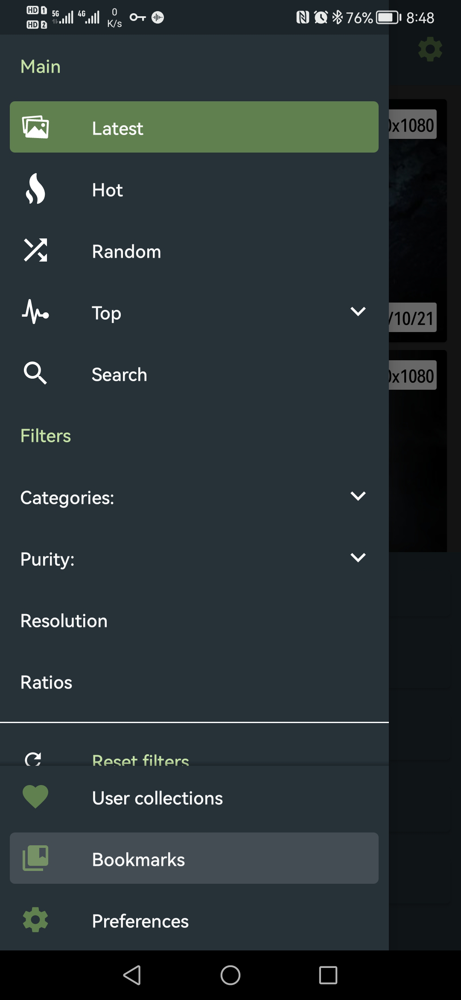
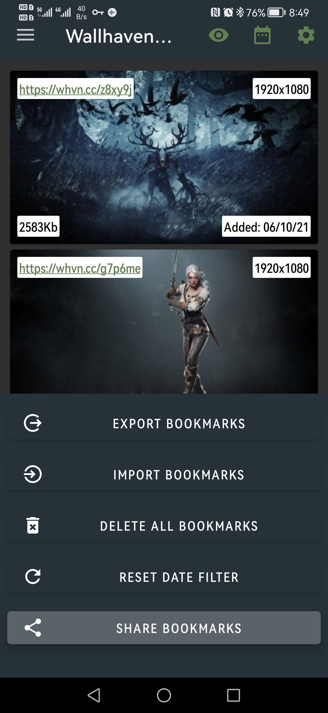

<!-- https://shoka.lostyu.me/computer-science/note/theme-shoka-doc/special/#code 代码块 -->
<!-- https://shoka.lostyu.me/computer-science/note/theme-shoka-doc/special/ -->
# 前言
最近折腾博客时，找到壁纸网站 wallhaven.cc ，官方没有手机客户端，只有第三方客户端，但是第三方客户端又不能在浏览图片时对喜欢的图片放入自己账号的收藏夹，而是作为本地 Bookmark 标记，一旦 APP 卸载，自己整理的喜欢的壁纸就丢失了。所以这里有两个概念：
- 1、本地书签（BookMark），跟着 APP 走
- 2、在线收藏（跟着账号走）
# APP 下载链接
谷歌商店地址
# 将喜欢的图片加入本地书签

# 导出书签
找到并进入书签界面

点击右上角更多（・・・），选择分享 bookmark，发送到聊天工具即可。

# 用 py 脚本自动将本地书签转为在线收藏。
# 本地 bookmark 文件结构:
[ | |
{ | |
"n": "j3y8pm", | |
"o": "https://th.wallhaven.cc/lg/j3/j3y8pm.jpg", | |
"r": 284, | |
"s": 1632674055901, | |
"p": "https://whvn.cc/j3y8pm", | |
"q": "1920x1080" | |
}, | |
{ | |
"n": "l3jqxl", | |
"o": "https://th.wallhaven.cc/lg/l3/l3jqxl.jpg", | |
"r": 116, | |
"s": 1632674060537, | |
"p": "https://whvn.cc/l3jqxl", | |
"q": "1920x1080" | |
} | |
] |
# 登录 wallhaven.cc
def login(): | |
'''登录，获取token''' | |
print('开始登录...') | |
header = {'User-Agent' : 'Mozilla/5.0 (Windows NT 6.1; Win64; x64) AppleWebKit/537.36 (KHTML, like Gecko) Chrome/80.0.3987.122 Safari/537.36'} | |
login_index_url = 'https://wallhaven.cc/login' | |
response = s.get(login_index_url, headers=header) | |
html = response.text | |
bf = BeautifulSoup(html, 'lxml') | |
hidden = bf.find_all('input', {'type':'hidden'}) | |
for i in hidden: | |
_token = i['value'] | |
data = { | |
'_token' : _token, | |
'username': 'sirliu110@gmail.com', # 账号 | |
'password': 'KwN9NGC@F34s3Ed' # 密码 | |
} | |
login_url = 'https://wallhaven.cc/auth/login' | |
response = s.post(login_url, headers=header, data=data) | |
if response.status_code == 200: | |
print("login success") | |
token = re.findall('<input type="hidden" name="_token" value="(.*?)">',response.text)[0] | |
return token | |
else: | |
print('login failed') | |
return response.status_code |
# 构造 加入收藏 的链接
通过抓包图片详情页点击 Add to Favorites 的动作，发现加入收藏的链接已经在访问图片详情页时返回了，其链接格式如下：https://wallhaven.cc/favorites/add?wallHashid=图片ID&collectionId=收藏夹ID&_token=40位长度的字符串
而且所有的图片收藏链接 token 都一致，猜测可能是登录后分配的统一 token。
于是查看登录请求的返回源码发现确实有 token 返回，于是可以直接构造加入收藏的链接。
f'https://wallhaven.cc/favorites/add?wallHashid={pic_hashid}&collectionId={collectionID}&_token={token}' |
# 完整代码
结合收藏夹图片信息爬取去重：http://sirliu.github.io/2021/9/Wallhaven 壁纸爬虫 /# 完整代码
import requests,json,re,time,random | |
from bs4 import BeautifulSoup | |
s = requests.Session() | |
def login(): | |
'''登录，获取token''' | |
print('开始登录...') | |
header = {'User-Agent' : 'Mozilla/5.0 (Windows NT 6.1; Win64; x64) AppleWebKit/537.36 (KHTML, like Gecko) Chrome/80.0.3987.122 Safari/537.36'} | |
login_index_url = 'https://wallhaven.cc/login' | |
response = s.get(login_index_url, headers=header) | |
html = response.text | |
bf = BeautifulSoup(html, 'lxml') | |
hidden = bf.find_all('input', {'type':'hidden'}) | |
for i in hidden: | |
_token = i['value'] | |
data = { | |
'_token' : _token, | |
'username': 'sirliu110@gmail.com', # 账号 | |
'password': 'KwN9NGC@F34s3Ed' # 密码 | |
} | |
login_url = 'https://wallhaven.cc/auth/login' | |
response = s.post(login_url, headers=header, data=data) | |
if response.status_code == 200: | |
print("login success") | |
token = re.findall('<input type="hidden" name="_token" value="(.*?)">',response.text)[0] | |
return token | |
else: | |
print('login failed') | |
return response.status_code | |
def AddtoFav(pic_hashid,token,collectionID): | |
"""构造加入收藏的链接并请求""" | |
favLink = f'https://wallhaven.cc/favorites/add?wallHashid={pic_hashid}&collectionId={collectionID}&_token={token}' | |
r = s.get(favLink) | |
if r.status_code==200: | |
print('成功加入收藏') | |
return 200 | |
elif r.status_code==429: | |
print(r.text) | |
return 429 | |
else: | |
print(r.text) | |
return 3 | |
def get_collection_pic_ids(): | |
'''返回图片ID列表'''r | |
with open('wallhaven.json','r') as f: | |
wallhaven = json.load(f) | |
return [i['id'] for i in wallhaven] | |
if __name__ == '__main__': | |
with open('bookmarks.json','r') as f: | |
bookmarks = json.load(f) | |
collectionID=972651 | |
token = login() | |
ids = get_collection_pic_ids() | |
if len(token)==40: | |
for index,bookmark in enumerate(bookmarks): | |
pic_hashid = bookmark["n"] | |
if pic_hashid not in ids: | |
code = AddtoFav(pic_hashid,token,collectionID) | |
if code == 429: | |
time.sleep(60) # 429 错误时，暂停 1 分钟再重试 | |
AddtoFav(pic_hashid,token,collectionID) | |
print(index) | |
elif code == 1: | |
time.sleep(5) # 防止报 429 Too Many Requests 错误，间隔 5 秒请求 | |
continue | |
elif code ==3: # 其他错误时中止循环，并打印循环位置，供下次继续 | |
print(index) | |
break |